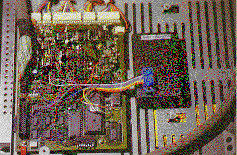

Previous
Next
TOC
Die Elektronik in dem kleinem Plastikgehäuse verhalf dem SLM 804
Laserdrucker zu einer Auflösung von 600 * 300 DPI mittels spezieller
im Lieferumfang enthaltener Druckertreiber.
Unter der zuhilfenahme normaler Druckertreiber ließ die zusätzliche
Steuerelektronik die Druckdaten einfach durch und der Drucker brachte
die Daten ganz normal mit 300 * 300 DPI zu Papier.

Der ATARI-Laserdrucker SLM 804 hat eine Auflösung von 300 dpi (,,dpi'
heißt ,dots per inch', zu deutsch: ,Punkte pro Zoll' - 1 Zoll beträgt
25,4 mm), und zwar sowohl horizontal als auch vertikal. Somit besteht
eine komplette DTN A4-Seite aus 2400 * 3386 Punkten, die natürlich
nicht alle definiert sind, sonst wäre das Blatt schwarz. Um nun die
Konturen von Rundungen (wer kennt die Treppeneffekte bei gebogenen
Linien nicht?), aber auch von relativ kleiner Schrift noch feiner
werden zu lassen, müßte man versuchen, einfach mehr Bildpunkte für
die gleiche Flächengröße zu verwenden. Das analoge Abbildungsprinzip
des Laserdruckers kommt uns bei einer bestechend einfachen Idee dabei
entgegen: Ein Laserstrahl wird mit drei rotierenden Spiegeln in hori-
zontaler Richtung abgelenkt und überstreicht dabei mit Unterbrechungen
Zeile für Zeile von links nach rechts auf einer rotierenden Trommel.
Diese Trommel hat eine extrem glatte Oberfläche und wird genau an
jenen Stellen, wo der Laserstrahl sie berührt, also wo später ein
Bildpunkt erscheinen soll, elektrostatisch aufgeladen. Diese Ladungs-
träger könnten im äußersten Fall die Größe nur eines Elektrons haben,
treten aber aufgrund der relativ großen Streuung des Laserstrahls als
regelrechte Ladungsbündel auf. Später streift ein Partikelbesen mit
negativ geladenen (schwarzen) Farbteilchen (genannt Toner) über die
Trommel, so daß diese Partikel genau dort auf der Trommeloberfläche
hängenbleiben, wo die positiven Ladungsträger sitzen - Gegenpole
ziehen sich an (siehe Physikstunde bei Lehrer Lämpel). Als letzter
Arbeitsschritt wird ein vorgeheiztes Blatt Papier um die Trommel
gelegt, weiter aufgeheizt, gleichzeitig ändert sich die Polung der
Trommel in negativ und stößt damit alle Tonerpartikelchen ab.
Schließlich ist der Toner in das Papier eingebrannt. Es ist nun
überhaupt kein Problem, dem Laserstrahl einfach genau die doppelte
Anzahl an Punktdefinitionen (pro Zeile) in horizontaler Richtung
mitzugeben.
weiterblättern
Kapitel Der ATARI Laserdrucker SLM804, Seite 2